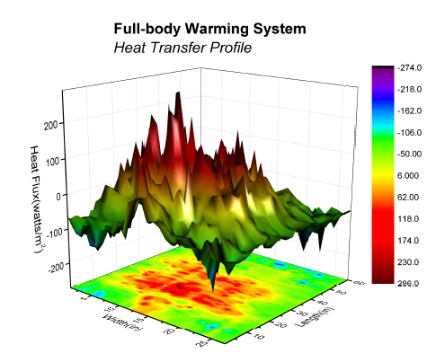

Farbiges Oberflächendiagramm
3D-Colormap-Surface
Zusammenfassung
Dieses Tutorial zeigt Ihnen, wie Sie ein 3D-Oberflächendiagramm mit Farbabbildung erstellen.
- 
Was Sie lernen werden
Dieses Kapitel zeigt Ihnen, wie Sie:
- ein 3D-Oberflächendiagramm mit Farbabbildung erstellen.
- das 3D-Oberflächendiagramm benutzerdefiniert anpassen.
Schritte
- Wählen Sie im Menü Hilfe: Lernzentrum, um den Dialog Lernzentrum zu öffnen. Wählen Sie Diagrammbeispiel im linken Bedienfeld des Dialogs und dann Wasserfalldiagramme in der Auswahlliste der Beispiele. Klicken Sie doppelt auf das Miniaturbild unten, um das Beispiel 3D Surface Plots - Surface Graph profiling Differences in Body Heat Transfer zu öffnen.
Hinweis: Dieses Tutorial ist mit dieser Seite in der Grafikgalerie verbunden.
- Markieren Sie die Matrix HFT data und wählen Sie Zeichnen: 3D: 3D-Oberfläche mit Farbabbildung und Projektion, um ein 3D-Diagramm zu erzeugen.
- Wählen Sie Format: Zeichnung, um zur Ebene der Zeichnung des Dialogs Details Zeichnung zu gelangen.
- Markieren Sie das Oberflächendiagramm, wechseln Sie zur Registerkarte Drahtgitter, deaktivieren Sie das Kontrollkästchen Aktivieren, um die Gitternetzlinien auszuschalten. Wechseln Sie zur Registerkarte Farbpalette/Kontur und klicken Sie auf die Überschrift Linie, um das Dialogfeld Konturlinien zu öffnen. Deaktivieren Sie in diesem Dialogfeld das Kontrollkästchen Nur auf Hauptebenen zeigen und aktivieren Sie Alle verbergen, um alle Konturlinien zu verbergen.
- Wählen Sie die Projektion im linken Bedienfeld, wechseln Sie zur Registerkarte Oberfläche und geben Sie 0 ein, wie im folgenden Bild zu sehen, um die Projektion ganz unten in der Grafik zu positionieren.
- Wechseln Sie zur Registerkarte Drahtgitter und deaktivieren Sie das Kontrollkästchen Aktivieren, um das Drahtgitter zu deaktivieren. Wechseln Sie zur Registerkarte Farbpalette/Kontur und verbergen Sie alle Konturlinien wie in Schritt 4.
- Klicken Sie auf Layer 1 im linken Bedienfeld und dann im rechten Bedienfeld auf die Registerkarte Belichtung. Ändern Sie die Einstellung, wie im Folgenden zu sehen, fest, um den Beleuchtungseffekt zu aktivieren:
Klicken Sie dann auf OK, um den Dialog zu schließen. - Ändern Sie zum Schluss Achsentitel und fügen Sie einen Diagrammtitel wie in der folgenden Grafik hinzu.